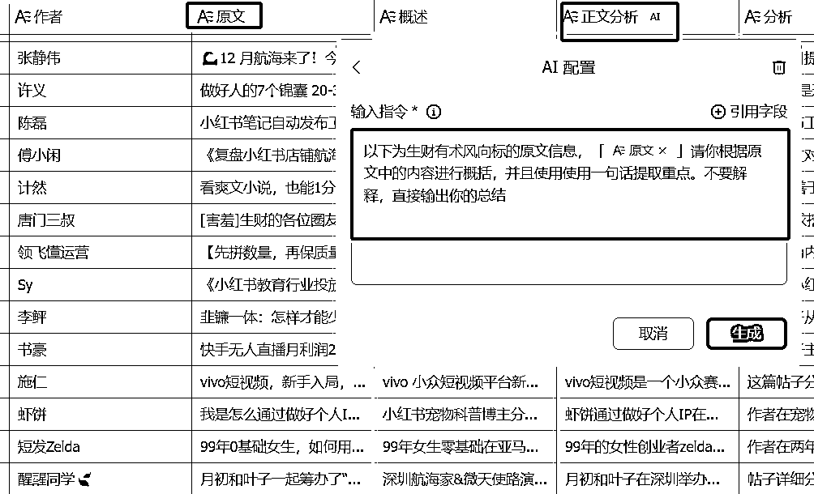
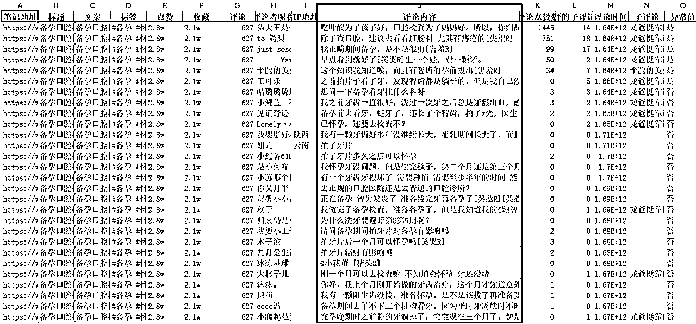
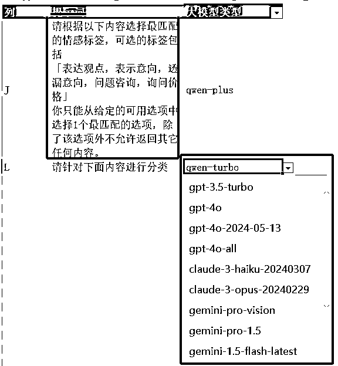
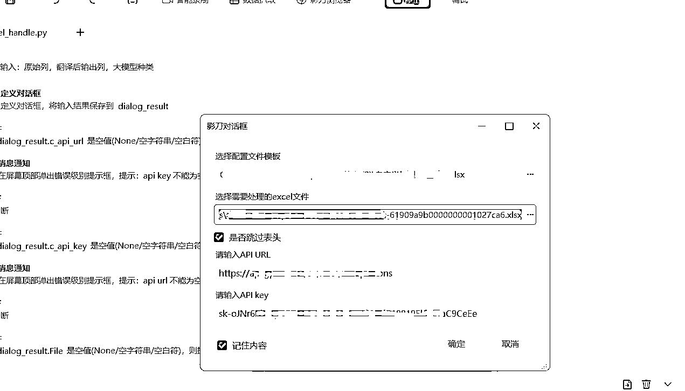
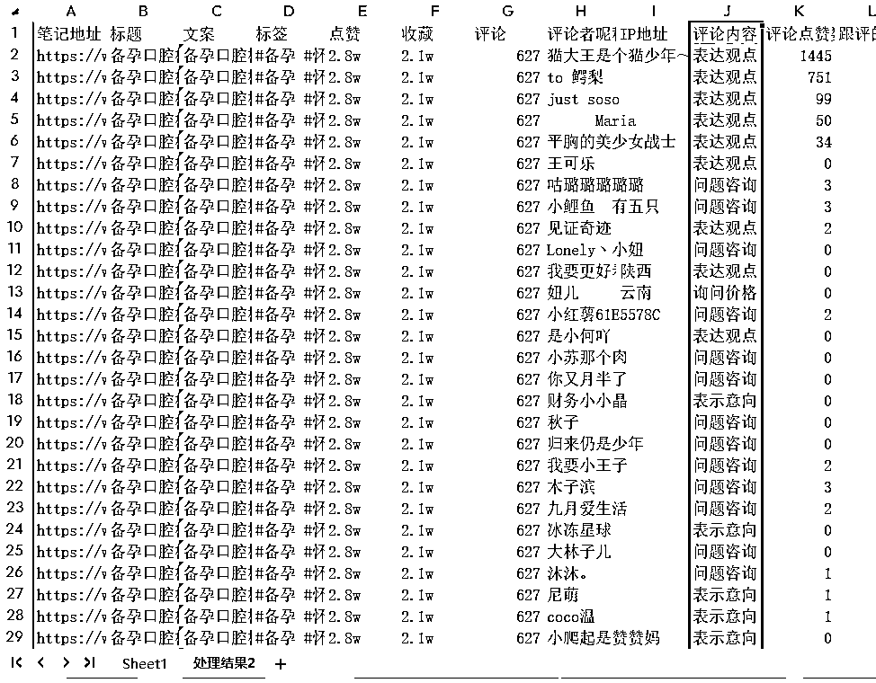
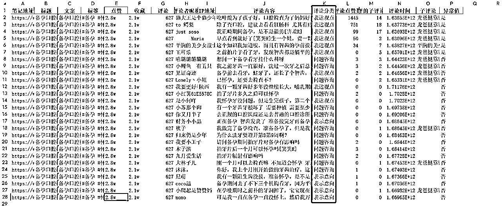

来源：https://ia0969wpr2.feishu.cn/docx/F2Bjd7IvMoNbyAxVzzccvauAnXd
不知各位有没有这种感觉，提取用户评价、生成产品文案、从文章中提炼关键信息…… 这些重复又琐碎的任务，像时间黑洞一样吸走了我们的时间。最近我也遇到了类似的问题，比如采集了小红书笔记、小红书评论，想针对这些数据分析用户倾向，根据原有爆款分析二创，如果手动筛选，复制prompt生成新文案整个流程低效繁琐，那有没有办法借助针对这些Excel批量处理呢？
这次航海正好有AI+编程，所以参考AI编程的思路写了一个脚本辅助完成自己的需求。
之前针对这些特定Excel列数据的处理都是借助 Notion后者飞书，比如下面是飞书的多维表格，我们可以针对某一列中的内容借助飞书AI进行内容分析或者创作，但是不管notion ai还是飞书ai，它们都存在一些局限性，处理流程不够灵活等，生成的条数有限制。
最重要的就是notion ai和飞书豆包的模型能力和主流的GPT4o、google gemini pro 等差距还是很大的，如果作为真正的生产力还有一段距离，但是目前飞书和notion只支持系统内置的大模型，自定义程度不够，不能根据不同模型擅长的方向更改模型。

在这种背景下,我们使用影刀+Python和 ai API，完全可以复现飞书和notion 的数据表格的AI处理能力，更低的成本、更灵活地实现数据的批量处理和分析，提高数据处理效率。
那这个流程可以用到什么地方呢？
比如：
等等等，上面的场景只是冰山一角。下面我以分析采集的小红薯笔记评论为例，借助AI分析评论的情感倾向，当然这里prompt是自定义的，我们既可以进行情感倾向分析，也可以通过评论内容进行潜在需求分析，根据自己的实际需要为准。





我会在文章后面分享生成这部分代码的详细prompt，即使你没有任何编程基础，借助gpt-4或者claude也可以轻松完成这部分代码。
这意味着我们可以把更多的时间和精力投入到更有价值的事情上去，数据分析不再是技术大牛的专属技能，每个人能轻松玩转数据分析，挖掘数据背后的价值，让数据帮你做决策。每个人都能利用数据的力量预测未来、优化策略，真正掌控数据的价值。
下面就是本次我使用的原始prompt，直接把下面提示词扔给claude3 或者 gpt4，然后根据实际反馈进行修正，最后就可以实现完整的流程，感兴趣的可以复现尝试一下
附promot：
请你根据下面项目描述信息进行Python脚本编写：
项目名称:Excel数据处理脚本
脚本功能:
读取Excel文件中的数据,根据配置文件中的设置,使用不同的提示词和AI模型对指定列的数据进行处理,并将处理后的结果写回到Excel文件的新工作表中。
功能需求:
1.读取配置文件:脚本应该能够读取一个单独的Excel配置文件,该文件指定了要处理的数据列、对应的提示词和要使用的AI模型。配置文件的格式如下:
◦第一列:要处理的数据列(可以是字母,如"A"、"B"等,也可以是数字)
◦第二列:该列数据的处理提示词
◦第三列:要使用的AI模型类型
2.读取数据文件:脚本应该能够读取指定的Excel数据文件,并提取出要处理的数据。
3.数据处理:对于配置文件中指定的每一列数据,脚本应该使用对应的提示词和AI模型进行处理。处理过程应该是并行的,以提高效率。
4.结果写回:将处理后的结果写回到原始Excel文件的新工作表中。新工作表应该包含原始数据和处理后的结果。
◦如果处理成功,将结果写入对应的单元格
◦如果处理失败,在对应的单元格中写入"处理失败",并将单元格字体设置为红色加粗,以便快速识别。